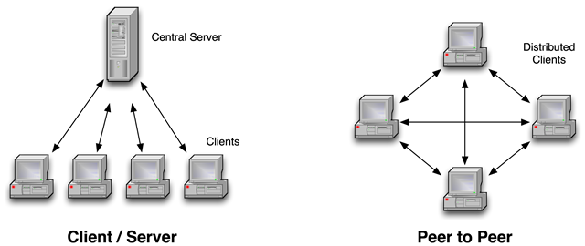
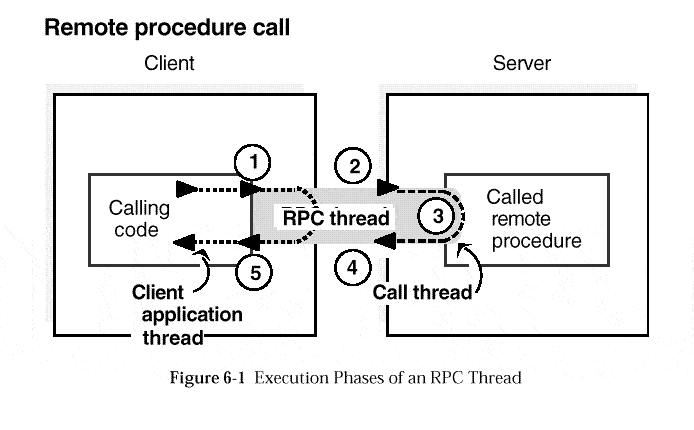

Networking
Are we recording?

Network architectures
MLAPI
Install networking library
- Install git
- Window -> Unity package manager
- + -> Add package from git URL
- Add the following URL:
- https://github.com/Unity-Technologies/com.unity.multiplayer.mlapi?path=/com.unity.multiplayer.mlapi
- Click Add
NetworkManager
- There must be only 1 NetworkManager(Singleton pattern)
- Handles networking settings and connections
- Can spawn a prefab(PlayerObject) for every connected player
- Contains a list of all spawnable prefabs
- Every player may own 1 PlayerObject and many NetworkObjects
NetworkObject
- It is required if the object has networking functionality
- Replicates the object in every instance of the game
- Allows association of the object across instances by assigning it a NetworkId
- Every NetworkObject has an owner
- Must be added only once either in the object or in a parent object
Network Transform
- Syncs the position and rotation of gameobject of the owner to all other clients
- Doesn't work sync scaling
NetworkNavMeshAgent
- Shares movement when using navmeshes
- Only the owner should change NavMeshAgent
- Changed settings at runtime aren't synced so you should use RPCs
NetworkAnimator
- Syncs animations accross network
- You must attach an animator component to it
- Only the owner of the gameobject should update the state of the animator
- Doesn't work with triggers, you should do that manually with RPCs
Spawning GameObjects
Instantiate creates gameobject localy. Spawning creates it in the other clients as well. Only the server can destroy or despawn.
GameObject go = Instantiate(myPrefab, Vector3.zero, Quaternion.identity);
go.GetComponent<NetworkObject>().Spawn();What is RPC?
- A function call which is executed in another program or computer
- It looks like a normal function call
- Must have [ServerRpc] or [ClientRpc] attribute
RPC
NetworkBehaviour
- Used to create your custom netowrking scripts
- Can contain RPCs and network variables
- Is owned by the NetworkObject
NetworkVariable
- Variables shared accross network
- You can setup read and write permissions for the clients and the server
- You can create your own types by implementing INetworkVariable
Changing scenes
The server can change the current scene with NetworkSceneManager
//This can only be called on the server
NetworkSceneManager.SwitchScene(mySceneName);